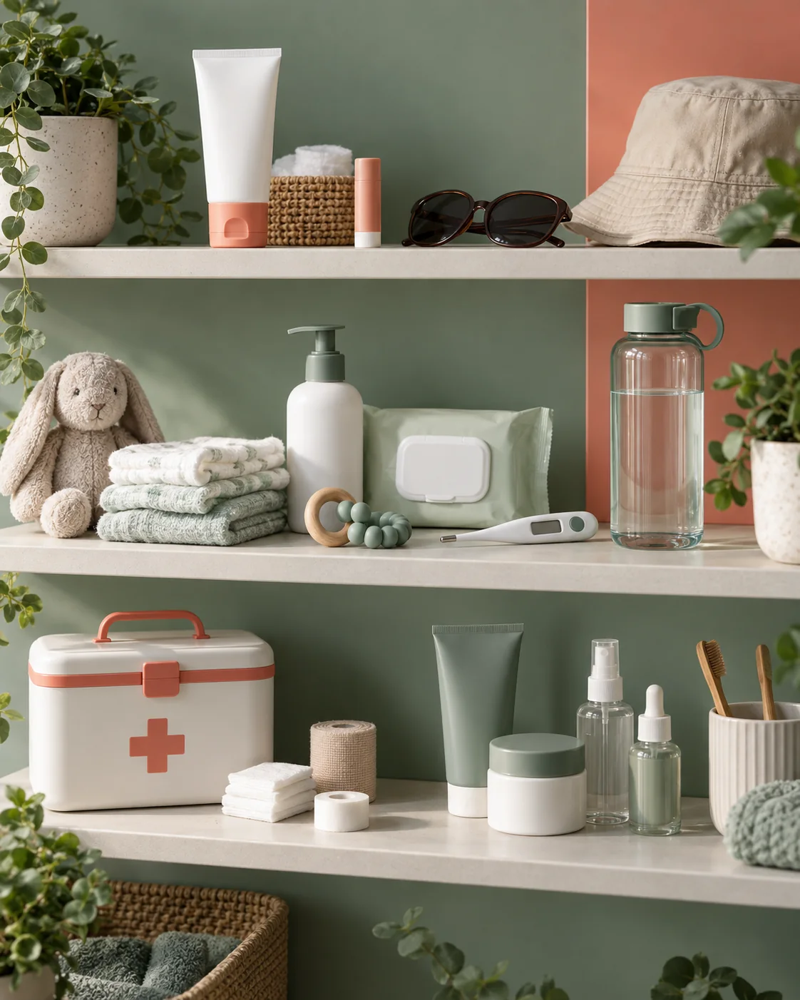

Dia a dia
Higiene, proteção e itens essenciais para sua rotina.
Perto de você em Fortaleza
Encontre a unidade mais próxima e continue seu atendimento pelo WhatsApp.
Escolha uma categoria para começar. Produtos, marcas, preços e estoque são confirmados pela unidade.

Higiene, proteção e itens essenciais para sua rotina.
Uma conversa rápida para localizar os cuidados que você procura.
Consulte a unidade sobre marcas e opções disponíveis.
Itens básicos para ter por perto quando precisar.
Escolha a região mais conveniente. Cada botão abre o WhatsApp publicado para aquela unidade.
Unidade Centro selecionada. Envie o que procura para a equipe confirmar estoque, valor e entrega.
Chamar a unidade Em caso de emergência ou sintomas importantes, procure atendimento médico. O chat não substitui orientação profissional.